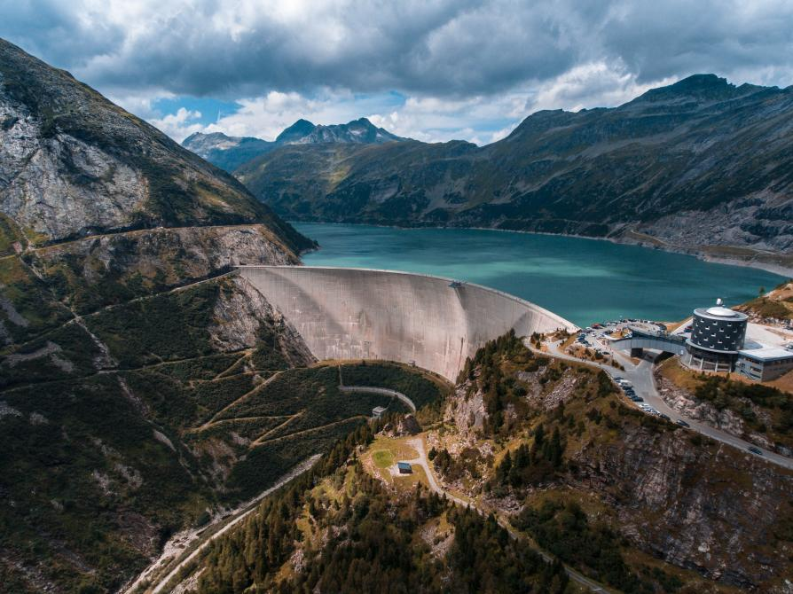
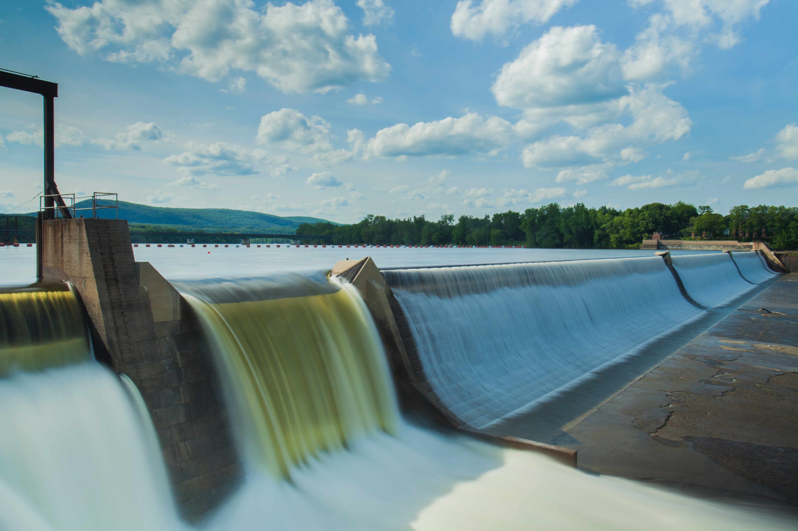

For centuries, humans have been able to harness the energy of rivers and other water sources by using wheels to process things like grains and cloth. But in the later 19th century hydropower came into play, becoming a well-known energy source after the British-American engineer James Francis developed the first modern water turbine a few decades prior. And today, hydropower currently provides about 16% of the world's electricty.
 Hydropower, like every other source of power, has it's pros and cons. One of the advantages of it being that once a dam has been built and the equipment installed, the flowing water, our energy source, is free. Plus it can be renewed by snow and rainfall. Hydropower plants can supply anourmous amounts of electricity, and are relatively easy to control. However, such big projects can also bring harm to wildlife, disrupt river ecosystems and force residents, local communities, and animals out of their natural habitat.
As we said previously, there will abviously be some big ups and downs but we didn't really cover the consequences that would follow if we do in fact start using hydropower as a main source of energy. Firstly, environmental issues like global warming and climate change can have a big impact on hydropower plants, as they both increase the risks of droughts. Having that in mind, people will most likely replace the lost energy from dams with that of coal and gas. Secondly, old dams and hydropower plants that are no longer functioning or neededwill probably be torn down around the world, with the goal of restoring rivers and other natural habitats in favor of wildlife and mankind.
The answers of your questions will be put here as soon as possible